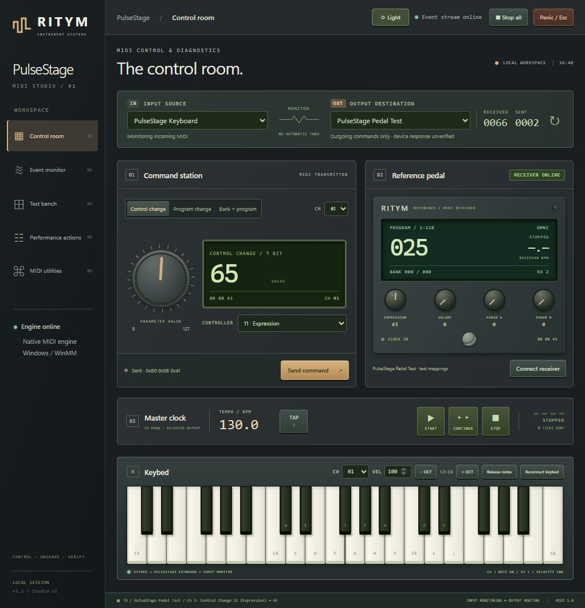

Ergonomic Console Design
Designed with the tactile clarity of professional outboard studio equipment.

Dark Console Mode
High-contrast, low-glare visual system tailored for arena stages, dim orchestra pits, and night festival performances.

Light Console Mode
Crisp, sunlight-readable studio palette designed for daytime rehearsal rooms, broadcast control booths, and outdoor stages.